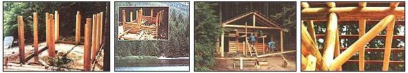

The art of building a shelter with log scrapsand little experience.
JUST A FEW YEARS AGO, I Discovered what could be the most convenient log-building technique in existence-while working for British Columbia's regional recreation commission. The fact that I wasn't the first to discover it (Canadian settlers, Hudson's Bay Company and the Royal Canadian Mounted Police had put it to widespread use over three centuries) highlights just how adaptable and functional the method is to have survived, soul intact, for more than 300 years.
French-Canadians call the technique piece sur piece (piece on piece), but I prefer the term short-log construction because it's more descriptive. This method of log building doesn't require arrow-straight whole timbers 20' or 30' long, as a traditional log cabin would; instead, logs 6' and 8' in length are used to make what's essentially a post-and beam framework that's filled in with equally short pieces laid horizontally in between the posts.
For anyone, especially the would-be homebuilder with a creative bent and a tight budget, the technique has a lot going for it. For one thing, most of the timbers are short and can be managed by one or two people and a pickup truck-usually, only parts of the roof require logs longer than the standard vehicle bed. For another, chunks of this size can be smaller in diameter than full-length logs, making the selection process a whole lot easier. Too, trees that can't yield a sound 25' run may well provide two perfectly good 8' sections.
And short logs are considerably less expensive than longer ones if you're buying felled timber-especially in areas where pulp logging is big business. Aesthetically, the piece-on-piece method also offers a flexibility that's just not part of many other log-building repertoires: Logs that are round, square or a combination of both may be used; outside corners can be overlapped and notched, dovetailed or set into posts; the bays can be widely spaced, or narrowed to match the width of doors and windows; and infill material between the posts needn't be strictly timber or even horizontal-rock, masonry or pre-insulated panels are all reasonable candidates, whether the structure is a cabin, barn or outbuilding.
Finally, the technique is very forgiving to the part-time builder-particularly the novice who may be juggling the demands of a paying job and a still-alien skill. Common sense, a good back and little more than a chain saw, a broad hatchet, a slick and some measuring tools are collectively a fair substitute for experience in this game. Also, short log construction is not the kind that needs to be gone at hammer-and-tongs to the end; work on a wall or section can proceed independently of efforts elsewhere. The infill logs can be precut, and in one variation, the roof can be finished before the bays are even filled in.
Skin, Rack and Stack
I don't mean to imply that building a short log cabin is a summer picnic. In my case, the project started as the most frustrating experience I'd had in a long time. I was one of a three-man crew for the recreation commission, and our job was to build a small cross country ski shelter. As a team, we had little construction experience, and certainly not in the specialty of log building. At any rate, we did have a free source of rot-resistant red cedar, and began by peeling the bark off the logs that met our criteria: seasoned, straight and no less than 8" in diameter. We came up with a number of solid 10" logs about 12' in length, so they became our posts, to be sunk 3 1/2' into the earth, with 7 1/2' or more left aboveground to provide at least 6" for top trimming. It happens that this is the way we opted to anchor our structure.
Surely other methods-perimeter footings for the code-conscious or spaced stone piers for the sake of tradition-would work equally well and probably even be better in some situations. To prepare the uprights, we used a chain saw and a hatchet to cut two flat sides opposite faces for all posts but the corner ones, which were flattened on adjacent sides.
It's important that these cuts be parallel to the center line of each log, rather than following its taper. Once this was done, we cut a 1 1/2" X 1 1/2" channel, or mortise, down the middle of each flat, using the chain saw for the rough work and trimming up with a framing chisel. Positioning the posts was just a matter of planning. It was necessary to line them up precisely, and to temporarily brace each one diagonally. The spacing between the posts was kept at a uniform 7' distance by placing boards, cut to the same length as the infill logs, between each of the uprights.
String stretched between batter boards insured that the postholes were dug accurately; by fastening the cord 1 ' outside the center line of each row, it was a simple matter to measure inward this same distance to align the marked center of each post.
At first, "we used a
joinery technique twice as difficult as needed."
LAYING OUT A LOG
ILLUSTRATIONS BY DON OSBY Before doing any measuring or cutting, the log should be peeled and supported in a sturdy sawbuck.
1. SQUARE-CUTTING AN END - Cut a piece of heavy paper or builder's felt into an 18" X 72" strip. Wrap it 1 1/2 turns around the log, match the paper's edges, and draw a line around the outer edge with indelible pencil.
2. FINDING THE CENTER LINE - Sight down the length of the log while a mate guides your eye with a plumb line. Mark the center point, then repeat the procedure at the log's opposite end. Snap a chalk line between these two points, then use a carpenter's level and pencil to draw vertical center lines down from the chalk line at each end.
3. LAYING OUT THE POSTS - Using the post with the smallest diameter, establish a finished width (opposite sides flattened), which you'll use for all the posts. Lay out a center line; on a curved log, plan the line so any curvature will be removed in cutting, thus straightening the post. Measure one-half the finished width out from each side of the center line on both ends, mark your verticals, and snap the chalk lines. Then draw a horizontal line through the center of each end with the help of a square or level. After the sides are hewed flat (crosscut to depth first, then finish with a hatchet), snap chalk lines between the ends of the horizontal lines to set the mortises' centers. Measure out from these lines, as above, to mark the borders of the mortises for cutting. If the posts are to be set in holes, it's not necessary to cut the sides or mortises any further than floor level. For corner posts, the flat sides should be adjacent to, rather than opposite, one another.
GLOSSARY OF TERMS
MORTISE: A groove cut into a framing member.
REBAR: Iron reinforcing bar used in concrete construction.
TENON: A tongue cut at the end of a wooden member to fit a mortise.
HEADER BEAM: A horizontal support above a door or window opening.
PLATE LOG: A horizontal log across the post tops which supports roof rafters.
RIDGEPOLE: A full-length rafter support at the peak of the roof.
KING POST: A vertical support between a plate log and the ridgepole.
PARBUCKLE: A simple hoist that uses a doubled rope to "pulley" a log up an incline.
PURLIN: A horizontal board placed across roof rafters to support roofing.
After setting the posts and bracing them from outside the structure, we laid up forms for the concrete slab. To discourage cracking, we divided the floor into sections to coincide with the supports by staking treated 2 X 4s between the posts and around the perimeter, placing two lengths of 3/8" rebar at the edge to hold the skirt together. This allowed a single pour which could be screed ed along the top of the boards, which were then simply left in place.
Since the floor doesn't support any real weight, the only threat it faces is from frost heaving, which hasn't yet proved to be a problem, even in-30°F temperatures. So far, so good. But then we took on what was supposed to be the raison d etre of shortlog construction: filling in the horizontal pieces. That part of the job was no longer a breeze-it was a tempest. In retrospect, I can blame our confusion on poor advice and less than-competent direction, but the fact of the matter was that we used a joinery technique twice as difficult as it needed to be to produce results that took four times as long. I still cringe to think that we actually wrestled with hopelessly wobbly (or terminally stuck) 2 X 6 splines to join notched horizontal logs to the mortised uprights.
The frustration of it all took its toll: Within days, my two comrades had quit. I was so dispirited I almost followed in their footsteps. But then I was given two new workers and the position of foreman, which shed fresh light on things. We set some reasonable standards, then dove into the work with relish. It didn't take long to discover that we should've cut tongues, or tenons, into the ends of the horizontal logs and merely dropped them into the waiting mortises. By trimming them slightly shorter than the actual distance between the grooves, one end can be started and the other raised enough to clear the top of the post. Settling should occur over time, so the logs weren't fastened.
"We were fortunate to
have a building inspector who relied on common sense."
LINKING LOGS
1 . MARKING THE TENONS
Make a template as shown from a piece of thin sheet metal. Place it over the end of a log so the center line is aligned with the sighting holes. Draw along the edges of the template in pencil, then mark the shoulder curves using the square cutting method described above. Repeat this at the opposite end of the log.
2. MORTISE AND TENON POST JOINT - The short horizontal infill logs fit into mortises cut into the flattened sides of the posts. The tenons at the ends of each log are trimmed so they can be dropped into place and allowed to gradually settle over time.
3. ALIGNING THE POSTS - The frame posts are aligned using guide string stretched between batter boards, shown at the corner. Temporary 2 X 6 supports fit between the posts, which are also diagonally braced against stakes.
4. FILING IN -The infill logs are slipped into the mortises as illustrated, with tapered ends alternating. The plate logs can be fit once the last course is in place, or work can be completed in sections. Our first course rested on a strip of tarpaper laid over the concrete. With other types of foundations, carefully cut sill logs would've been appropriate to support a girder and floor joists, but that wasn't necessary in our simple shelter. Each successive course alternated butt-to tip with its neighbor below to minimize the natural taper of the logs.
To make our trimming chores easier, we took pains to choose the straight sides of any bowed logs as the top and bottom; as time ran short, we merely flattened these faces rather than scribing and cutting lateral V-grooves into the bottom of each timber. Naturally, this left gaps of up to 1/2" between the courses, and probably would've invited standing water in places had those spaces not been filled later with chink sealant-a maintenance step that's taken regularly with log buildings.
Windows and doors can be either planned, or, as in our method, treated as an afterthought. Speaking now from experience, I can offer some suggestions. Door frames are made most easily by placing posts on either side of the opening, one of which can be a corner or frame member. The faces needn't be mortised.
Window openings, if they're small, can be cut out from a solid wall, or placed against a post. With large windows, posts should be set on either side of the casing, and a header beam or framing used above to meet the top plate log. Be sure to caulk between the casings and the logs or framework around them.
Pass the Plate
The purpose of the plate logs is to tie the tops of the posts together and provide a bearing beam for the roof rafters. In addition to the ridgepole, these might be the only long logs needed. In a pinch, short logs, attached end to end by lap joints cut to rest on top of the posts, will do as well as full-length timbers; this, in fact, is how we joined the plate logs at the corners, securing them by pounding cut lengths OF 1/2" rebar into 3/8" holes drilled through the joints and into the uprights below.
Using the most elementary mathematics, we figured that the posts could be trimmed 3" higher than the top of the uppermost horizontal course, allowing that gap to be filled by the plate logs when 3" flat notches were cut into their undersides. Given logs of 10" or more in diameter, this left plenty of meat for load support, even where a lap joint was involved. To distribute the considerable weight of the roof evenly over the structure (and to make it easier for our modest crew to lift the longer, unwieldy rafters), we used a ridgepole-a full length timber supported by vertical king posts and a pair of diagonal struts. Temporary bracing used to hold up the kings doubled as an incline when it came time to haul the ridgepole to the top of the posts with our hastily made rope parbuckle.
To fasten the ridge to the king posts, we relied again on the notch and rebar method. I'll admit that we used no special joinery to attach the rafters to the ridgepole or the plates. To get the upper surfaces of all the rafters to line up, we just removed enough wood from their undersides to make the tops more or less even. Temporary spikes held opposite rafter tips in place next to each other at the peak, while we dashed through the junctures with a chain saw to trim those mates at the proper angle. After spiking the butt ends of the rafters to the plates, we simply lined up the matching tips, drilled our sockets and drove home the upper rebar spikes as well. To support the corrugated sheet roofing, we made do with rough-cut 1 X 4 purlins, which cost less and offered more strength than dressed lumber. Since the rafters weren't quite in a perfect plane, we had to trim down the high points and build up the low ones.
Even so, the roof is still somewhat wavy, but no one can see it from the ground. I suppose we were fortunate in that we had a building inspector who relied on his common sense and experience rather than insisting on a rubber-stamp blessing from an architect or structural engineer.
It was obvious that we weren't intentionally sloppy in our detail work; he cheerily approved everything! Now that it's all behind me, I'm happy for the experience. After all, we learned something, accomplished more and actually turned a disaster into a triumph in a handful of weeks. Even now, I have a pleasant recollection of thoroughly enjoying the work by the time it was finished.
Editor's Note: Additional information on short-log post-and-beam construction is available in The Short Log & Timber Building Book by James Mitchell, a designer builder well versed in the technique. Included in the 240-page softbound book are foundation, flooring and roofing details, design variations and several hundred illustrations. It's available for $12.95 ($14.95 Canada) from Hartley & Marks Publishers, P.O. Box 147, Point Roberts, WA 98281.
|
 on two sides and lined carefully. Then the fill logs were shaped and fit info place. The plate logs tie the tops of the uprights together and serve as bearing beams for the roof rafters. The ridgepole is supported by vertical king posts and diagonal struts. |
|
|